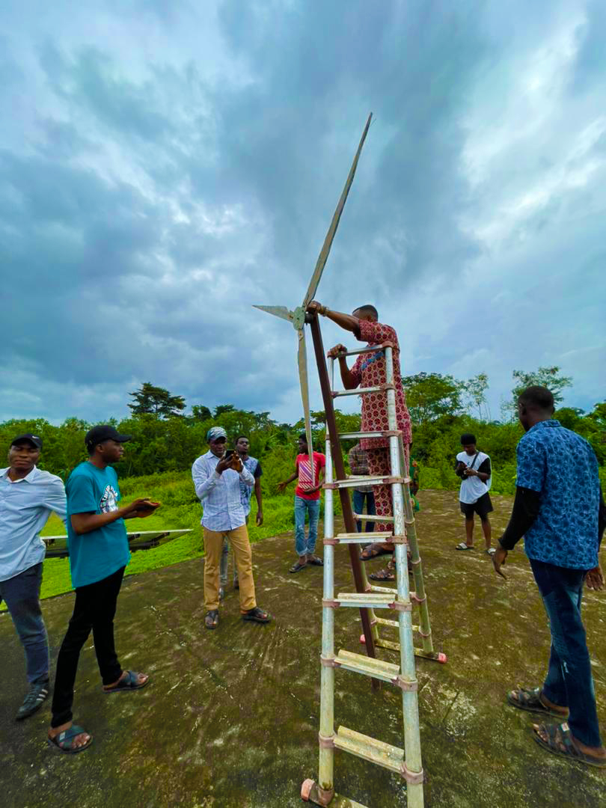
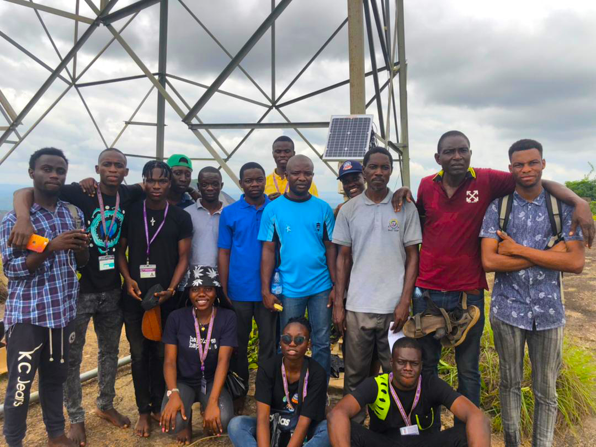
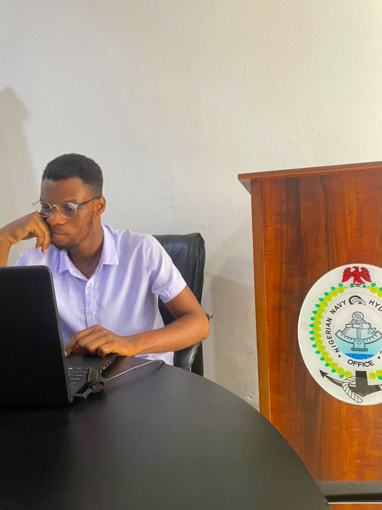
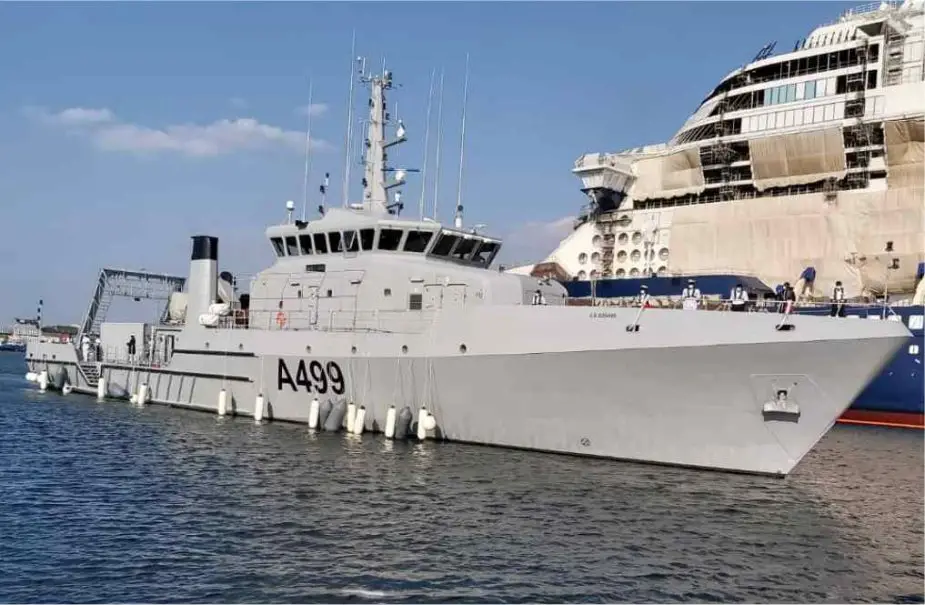

ST John's Comprehensive Academy, Ilesa, Osun State.
West African Senior School Certificate 2016
Secondary School
| Subject | Grade |
|---|---|
| English Language | B3 |
| Mathematics | B3 |
| English Language | B3 |
| Physics | B3 |
| Chemistry | B3 |
| Further Mathematics | A1 |
| Civic Education | A1 |
| Dyeing and Bleaching | A1 |
| Geography | C4 |
| Technical Drawing | C5 |
{kind=link}
Tertiary Education
Federal University of Technology, Akure 2024
Degree: Bachelor of Technology in Applied Physics
CGPA: 4.14 / 5.0
Download Academic Transcript
Download Certificate
Degree: Bachelor of Technology in Applied Physics
CGPA: 4.14 / 5.0
{kind=link}
Complementary Learning
International Hydrography Organization (2024)
Course: Hydrographic Survey
Download Certificate
WorldQuant University (2026)
Course: Applied Data Science
Download Certificate
NYSC Certificate of Training (2024)
Green Energy Enterprise
Download Certificate
IIENSTITU (2025)
Course: Digital Marketing
Download Certificate
Course: Hydrographic Survey
Download Certificate
WorldQuant University (2026)
Course: Applied Data Science
Download Certificate
NYSC Certificate of Training (2024)
Green Energy Enterprise
Download Certificate
IIENSTITU (2025)
Course: Digital Marketing
Download Certificate
Experience Through Academic Journey

Center for Renewable Energy Technology (CRET-FUTA)
Wind Energy Department, 2021
Contributed to groundbreaking research on wind energy dynamics, optimizing turbine efficiency and sustainability.
Spearheaded the design and construction of a miniature wind turbine prototype.
Collaborated with a team of engineers and researchers to test and refine turbine performance.
Visit Organization
Wind Energy Department, 2021
Contributed to groundbreaking research on wind energy dynamics, optimizing turbine efficiency and sustainability.
Spearheaded the design and construction of a miniature wind turbine prototype.
Collaborated with a team of engineers and researchers to test and refine turbine performance.
Visit Organization
Field Research — Idanre Hill Meteorological Field Study
Participated in environmental fieldwork involving on-site meteorological data collection, surface-temperature measurement, and terrain-microclimate analysis.
Participated in environmental fieldwork involving on-site meteorological data collection, surface-temperature measurement, and terrain-microclimate analysis.



Nigerian Navy Hydrography Office (Now National Hydrographic Agency)
Intern
Collaborated with multidisciplinary teams to prepare nautical charts for Calabar River and integrate blind navigation initiatives utilizing constellation technology.
Conducted data analysis and interpretation to optimize navigational routes and mitigate hazards.
Interacted with and gained operational experience aboard Nigerian Navy Ship LANA (A499).
Visit Organization
Intern
Collaborated with multidisciplinary teams to prepare nautical charts for Calabar River and integrate blind navigation initiatives utilizing constellation technology.
Conducted data analysis and interpretation to optimize navigational routes and mitigate hazards.
Interacted with and gained operational experience aboard Nigerian Navy Ship LANA (A499).
Visit Organization





Leadership Experience
Speaker
Nigerian Association of Earth and Mineral Sciences
Parliamentary Council, FUTA (2020 – 2022)
Nigerian Association of Earth and Mineral Sciences
Parliamentary Council, FUTA (2020 – 2022)
Chief Whip
Nigerian Association of Earth and Mineral Sciences
Parliamentary Council, FUTA (2018)
Nigerian Association of Earth and Mineral Sciences
Parliamentary Council, FUTA (2018)
Senior Special Assistant on Media and Publicity
Office of the Financial Secretary – National Association of Nigerian Students (2021)
Office of the Financial Secretary – National Association of Nigerian Students (2021)
Lead Green Fellowship Programme
Team Lead - Sustainable Urban Development (2026)
Team Lead - Sustainable Urban Development (2026)